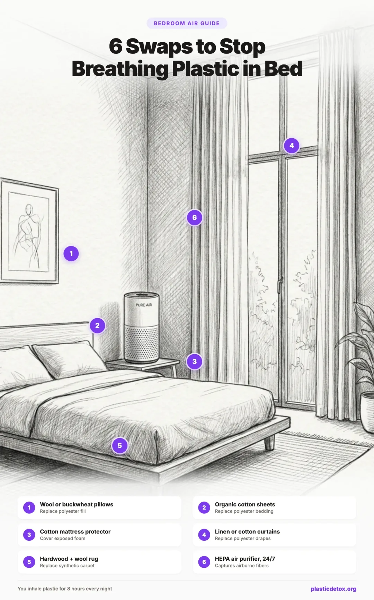

6 Swaps to Stop Breathing Plastic in Your Bedroom
You spend roughly one third of your life in bed. For 7 to 9 hours every night, your face is pressed into your pillow and sheets, and you breathe deeply and slowly at close range to the textiles around you. If those textiles are synthetic, you are inhaling microplastic fibers the entire time.
Research shows that bedroom air contains some of the highest microplastic concentrations in the home, up to 17,000 fibers per cubic meter in bedrooms with synthetic carpet and polyester bedding. That means the room where you rest and recover is the room where your microplastic exposure is greatest.
The good news: a handful of simple swaps can reduce your bedroom microplastic exposure by up to 90%. This guide walks you through the six changes that make the biggest difference, starting with the ones closest to your face. For a full breakdown of every room in your home, see our complete guide to microplastics in indoor air.

1. Why the Bedroom Matters Most
Not all rooms contribute equally to your microplastic exposure. The bedroom stands out for three reasons:
Duration of exposure. You spend 7 to 9 hours in your bedroom every night. No other room comes close. Even a moderate concentration of airborne microplastics adds up to a large total dose when you are breathing it in for that many hours consecutively.
Proximity to sources. Your face is literally pressed into your pillow and sheets. The breathing zone during sleep is inches away from the textiles that shed the most fibers. This is fundamentally different from sitting across the room from a synthetic curtain.
High source density. A typical bedroom contains polyester sheets, polyester filled pillows, a polyurethane foam mattress, synthetic carpet, and polyester curtains. Each one sheds microplastic fibers continuously. Together, they make the bedroom the most concentrated source of airborne microplastics in most homes.
The six swaps below are ordered by impact. Swaps 1 and 2 address the sources closest to your face and make the biggest immediate difference. Swap 6, the HEPA air purifier, acts as a safety net that captures fibers from whatever sources remain.
- Open your bedroom window for 20 minutes before bed. Outdoor air typically has 100x fewer microplastics than indoor air. Flushing your bedroom with fresh air before sleep immediately lowers the concentration you breathe all night.
- Move synthetic clothing out of the bedroom. That chair piled with polyester jackets and gym clothes is shedding fibers into your sleeping air around the clock. Move them to a closet with a closed door, or better, a different room.
- Damp wipe your nightstand and headboard. A quick wipe with a damp cloth picks up settled microplastic dust that would otherwise become airborne from the vibration of rolling over or adjusting your pillow.
2. Swap 1: Pillows
Replace polyester pillows with wool, kapok, or buckwheat
Your pillow is the single closest source of microplastics to your airways. Polyester filled pillows shed fibers with every head turn, and you breathe through and into the pillow surface for hours. Switching to a natural fill pillow eliminates this source entirely.
Wool pillows are the most versatile natural option. Wool is naturally hypoallergenic, temperature regulating, and resistant to dust mites. Unlike polyester fill, wool fibers are biodegradable and do not contribute to microplastic pollution. Wool pillows maintain their loft well and last significantly longer than synthetic alternatives. Look for pillows with an organic cotton outer cover.
Kapok pillows use the silky fiber from kapok seed pods. Kapok is naturally lightweight, breathable, and feels similar to down without any animal products. It is a good option if you prefer a softer, flatter pillow.
Buckwheat hull pillows offer firm, adjustable support. You can add or remove hulls to customize the loft. They sleep cool because air circulates between the hulls. The firmness takes some getting used to, but many people find they sleep better once they adjust.
| Product | Fill Material | Key Features | Rating |
|---|---|---|---|
| Holy Lamb Organics Wool Pillow | Wool fill, organic cotton cover | Adjustable loft, hypoallergenic, made in USA | |
| Organic Kapok Pillow | Kapok fiber, cotton cover | Soft feel, vegan, lightweight, adjustable | |
| Buckwheat Hull Pillow | Buckwheat hulls, cotton cover | Firm support, fully adjustable, sleeps cool |
3. Swap 2: Sheets and Duvet
Replace polyester bedding with organic cotton, linen, or TENCEL
After your pillow, sheets and duvet covers are the next closest textiles to your breathing zone. Polyester sheets shed microplastic fibers with every movement during the night. Natural fiber bedding eliminates this entirely and often feels better too.
Organic cotton is the most accessible swap. It is widely available, affordable, and machine washable. Look for GOTS (Global Organic Textile Standard) certified options, which guarantee the cotton is organic and processed without harmful chemicals. Percale weave is crisp and cool. Sateen weave is smoother and slightly warmer.
Linen (flax) is exceptionally durable and gets softer with every wash. Linen regulates temperature better than cotton, keeping you cool in summer and warm in winter. It has a relaxed, textured look that many people love. The tradeoff is higher initial cost and a rougher feel until it breaks in.
TENCEL (lyocell) is worth knowing about. It is not a synthetic plastic. TENCEL is a manufactured fiber made from sustainably harvested wood pulp using a closed loop process. It is biodegradable, silky smooth, and does not shed microplastics. It is an excellent choice if you like the smooth feel of polyester but want to avoid the plastic.
| Product | Material | Key Features | Rating |
|---|---|---|---|
| Boll & Branch Signature Sheets | 100% organic cotton | GOTS certified, Fair Trade, 300 thread count percale | |
| Coyuchi Organic Percale Sheets | 100% organic cotton | GOTS certified, relaxed texture, durable | |
| 100% Linen Sheet Set | Linen (flax) | Temperature regulating, gets softer over time, extremely durable | |
| TENCEL Lyocell Sheet Set | TENCEL (lyocell) | Silky smooth, biodegradable, moisture wicking |
4. Swap 3: Mattress Protector
Cover your foam mattress with an organic cotton protector
Most mattresses contain polyurethane foam, which degrades over time and releases microplastic particles into your bedding and air. A tightly woven natural fiber mattress protector creates a barrier that traps these particles before they become airborne.
You do not need to replace your mattress. An organic cotton mattress protector is an affordable solution that significantly reduces particle release from foam. Look for a tightly woven protector rather than a loose knit one, as the tight weave is what blocks particles from passing through.
If you are shopping for a new mattress, consider natural latex, organic cotton, or wool mattresses. These contain no polyurethane foam and do not release microplastic particles. They tend to cost more upfront but last longer and do not degrade the same way foam does.
Mattress Protectors
| Product | Material | Key Features | Rating |
|---|---|---|---|
| Organic Cotton Mattress Protector | Organic cotton | Tight weave blocks particles, breathable, machine washable | |
| Wool Mattress Pad | Wool fill, cotton cover | Adds comfort layer, temperature regulating, dust mite resistant |
If You Are Replacing Your Mattress
| Product | Material | Key Features | Rating |
|---|---|---|---|
| Avocado Green Mattress | Organic latex, wool, cotton | GOLS and GOTS certified, GREENGUARD Gold, handmade in USA, coil + latex hybrid | |
| Naturepedic Serenade Organic Mattress | Organic cotton, wool, latex | GREENGUARD Gold certified, encased coils, no fiberglass or flame retardants | |
| Pure Green Natural Latex Mattress | GOLS organic latex, wool, cotton | Available in soft, medium, and firm. No polyurethane foam or fiberglass |
5. Swap 4: Curtains
Replace polyester curtains with cotton, linen, or hemp
Polyester curtains shed fibers every time they move in a breeze or when you open and close them. Because bedroom curtains are often near the bed and near open windows that create airflow, they contribute more to your breathing zone than you might expect.
Cotton and linen curtains are widely available and work as direct replacements. Hemp curtains are less common but extremely durable and naturally resistant to mildew. For blackout functionality, look for cotton curtains with a tightly woven backing rather than a synthetic foam backing.
| Product | Material | Key Features | Rating |
|---|---|---|---|
| 100% Cotton Curtain Panels | Cotton | Widely available, machine washable, light filtering | |
| Natural Linen Curtains | Linen (flax) | Beautiful drape, gets softer over time, naturally light filtering | |
| Cotton Blackout Curtains | Cotton with woven blackout backing | Room darkening without synthetic foam backing, good for bedrooms |
If you are not ready to replace your curtains, wash them in a Guppyfriend washing bag before rehanging. This removes loose fibers that would otherwise shed into your air over the following weeks. For more on managing synthetic fiber shedding throughout your home, see our guide to microplastics in clothing and laundry.
6. Swap 5: Flooring
Replace synthetic carpet with hard flooring or a wool rug
Synthetic carpet is both a source and a reservoir of microplastics. Nylon and polyester carpet fibers shed continuously. The carpet also traps microplastic dust from other sources and resuspends it into the air with every footstep.
A 2019 study by Vianello et al. found that homes with synthetic carpet had microplastic concentrations in settled dust 2x to 10x higher than homes with hard flooring. Removing bedroom carpet and switching to hardwood, tile, bamboo, or cork makes a measurable difference.
If you want the warmth and softness of a rug, choose a wool rug. Wool is a natural fiber that sheds biodegradable particles rather than microplastics. A wool rug on hard flooring gives you the comfort of carpet without the microplastic problem.
| Product | Material | Key Features | Rating |
|---|---|---|---|
| Handwoven 100% Wool Area Rug | Wool | Natural fibers, durable, available in many sizes and styles | |
| Safavieh Natural Fiber Collection | Wool and jute blends | Affordable, neutral styles, good for layering on hard floors | |
| Organic Cotton Washable Rug | Organic cotton | Machine washable, great for nurseries and kids rooms, soft underfoot |
If replacing carpet is not an option right now, vacuum the bedroom carpet at least once a week with a HEPA vacuum. This removes settled microplastic dust before it becomes airborne again.
7. Swap 6: HEPA Air Purifier
Add a HEPA air purifier and run it 24/7
A true HEPA air purifier captures 99.97% of particles 0.3 microns and larger. Since most airborne microplastic fibers are between 1 and 5,000 microns, a HEPA filter catches them with near perfect efficiency. This is your safety net for whatever sources you have not yet replaced.
Place the purifier within a few feet of your bed, ideally on the side where you sleep. Run it continuously, not just at night. Microplastic fibers accumulate throughout the day and you want the air already clean by the time you go to sleep.
Noise matters. If the purifier is too loud for sleep, you will turn it off, which defeats the purpose. Look for models rated under 30 dB on their lowest setting. The Blueair Blue Pure 411 runs at just 17 dB on low, which is essentially silent.
| Product | Room Size | Key Features | Rating |
|---|---|---|---|
| Coway Airmega AP-1512HH | Up to 361 sq ft | True HEPA, 24.7 dB on low, auto mode, affordable filters | |
| Blueair Blue Pure 411 | Up to 190 sq ft | Ultra quiet (17 dB on low), compact, low energy use | |
| Levoit Core 300 | Up to 219 sq ft | True HEPA H13, 24 dB on low, under $100 |
The Making the Bed Problem
Here is something most guides miss: making the bed is one of the highest fiber release moments of the day. Shaking out sheets, fluffing pillows, and pulling up a duvet sends a concentrated burst of fibers into the air. A study by Dris et al. found that textile manipulation like bedmaking generates significantly more airborne fibers than passive shedding.
Two simple habits reduce this. First, make the bed gently. Pull sheets and covers into place rather than shaking them out. Second, if you have a HEPA purifier, turn it to high for 15 minutes after making the bed. It will capture the burst of fibers before they settle throughout the room.
8. Recommended Products
Organic Cotton Bedding
GOTS certified organic cotton sheets and pillowcases are the most accessible and affordable swap. They eliminate synthetic fiber shedding during sleep, breathe well, and are machine washable. Start here if you are making one change.
Why we recommend it: Eliminates the largest source of nighttime microplastic exposure, widely available, and affordable.
Wool Pillows
Wool filled pillows are naturally hypoallergenic, temperature regulating, and resistant to dust mites. They maintain their loft well and last significantly longer than synthetic alternatives. Zero microplastic shedding.
Why we recommend it: Eliminates the closest source of microplastics to your airways. Natural temperature regulation and long lasting.
Guppyfriend Washing Bag
If you still have synthetic textiles in your bedroom that you are not ready to replace, wash them inside a Guppyfriend bag. It captures up to 86% of the microfibers that shed during a wash cycle, preventing them from entering your water supply and settling as dust in your home.
Why we recommend it: Reduces microfiber release at the source for any synthetic items you still use. Reusable for hundreds of washes.
Frequently Asked Questions
Studies have found between 8,000 and 17,000 microplastic fibers per cubic meter in bedrooms with synthetic carpet. Bedrooms with hard flooring typically have 2,000 to 6,000. The concentration depends on flooring type, bedding materials, and whether a HEPA air purifier is used.
Yes. Polyester sheets continuously shed microscopic plastic fibers through normal use, friction from movement during sleep, and washing. These fibers become airborne and are inhaled during the 7 to 9 hours you spend in bed each night.
100% organic cotton, linen (flax), and TENCEL (lyocell) are the best choices. All three are free of synthetic plastic fibers and do not shed microplastics. Look for GOTS certified organic cotton for the highest standard of purity.
Yes. A true HEPA air purifier captures 99.97% of particles 0.3 microns and larger, including microplastic fibers. Running one continuously in your bedroom can reduce airborne microplastics by 60 to 80%, even before replacing any textiles.
No. TENCEL (lyocell) is a manufactured fiber, but it is not synthetic plastic. It is made from sustainably harvested wood pulp using a closed loop process where the solvent is recycled. TENCEL is biodegradable and does not shed microplastics, making it an excellent alternative to polyester.
Not necessarily. A tightly woven organic cotton mattress protector creates an effective barrier that traps particles released by foam mattresses. This is a much more affordable solution than replacing the entire mattress. If you are buying a new mattress anyway, natural latex, organic cotton, and wool mattresses are the best options for avoiding microplastics.
Start with your pillows. Your pillow is the single closest microplastic source to your airways, and replacing it is relatively inexpensive. Sheets and pillowcases would be the second priority. Together, these two swaps address the sources with the most direct contact to your breathing zone.